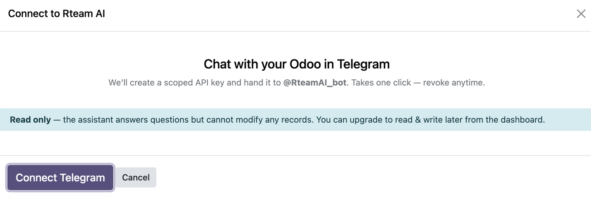
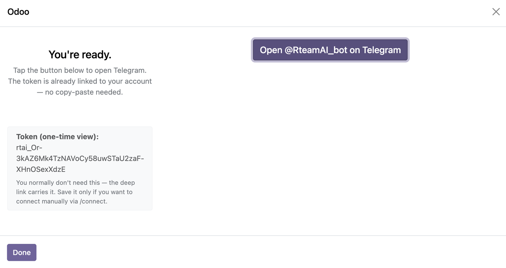
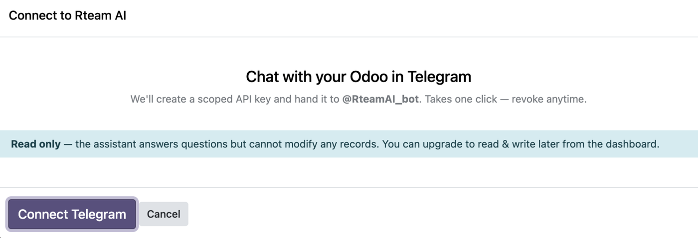
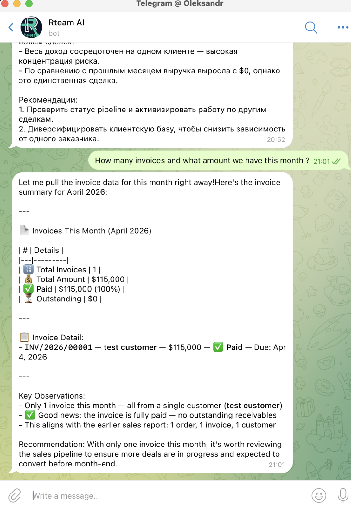

Ask your ERP anything in plain English, Russian, Ukrainian, or 20+ other languages. Get instant answers from your sales, inventory, HR, and finance data — right inside Telegram, via text or voice. Install this module, connect the bot in 60 seconds, and your whole team has a smart Odoo assistant in their pocket.
One click in Odoo, one deep link to Telegram, and your whole team can query your ERP in plain language. No setup, no Zapier, no scripts.
Click Rteam AI in the top menu. A one-screen wizard creates a scoped API key and registers it with the Rteam AI service. No forms, no copy-paste.


The wizard produces a deep link that launches @RteamAI_bot with your token pre-filled. No copy-paste, no "where do I paste this?" — one tap and the bot already knows who you are.
A single card shows connection status, usage, scope, and a big button to open the bot again. Rotate tokens or revoke access with one click — no menus, no developer mode.


The bot reads your Odoo schema on demand, runs the right queries, and writes the answer in your language with key observations and recommendations. Text or voice. Solo or whole team.
v14 · v15 · v16 · v17 · v18 · v19 · Community · Enterprise
Most AI integrations support only the latest 2-3 versions. This one covers every Odoo major since 2020, both Community and Enterprise, self-hosted or on Odoo.sh. No migration needed.
Choose read-only or read & write scope per connection. Rotate or revoke anytime. Token hash is stored — the raw token is shown once, then gone.
The assistant answers questions by reading data on demand. Nothing is persistently copied out of your Odoo. Conversation logs are stored back in your own Odoo instance under the Rteam AI menu.
Remove the module and all tokens are automatically revoked. No orphan connections, no lingering access.
Every question, every answer, every write action is logged in Odoo with timestamp, user, duration, and tokens consumed.
The module is free and LGPL-3. The Rteam AI service has a free tier (20 queries/day, 1 user, read-only) that works forever — no credit card needed. Upgrade to Pro, Business, or Enterprise for unlimited queries, write actions, voice input, multi-user, and custom workflows.
Rteam is an Odoo consulting and software development agency specializing in Enterprise implementations, upgrades, and custom modules across eCommerce, education, finance, and manufacturing verticals. We built this assistant because our clients kept asking one question: "Can I just ask Odoo in plain language?" Now you can.